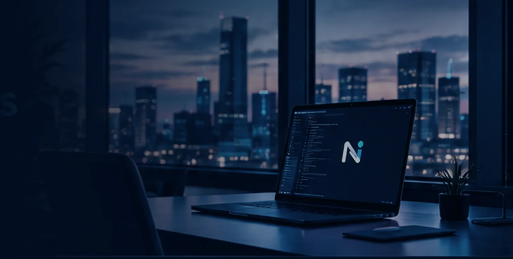
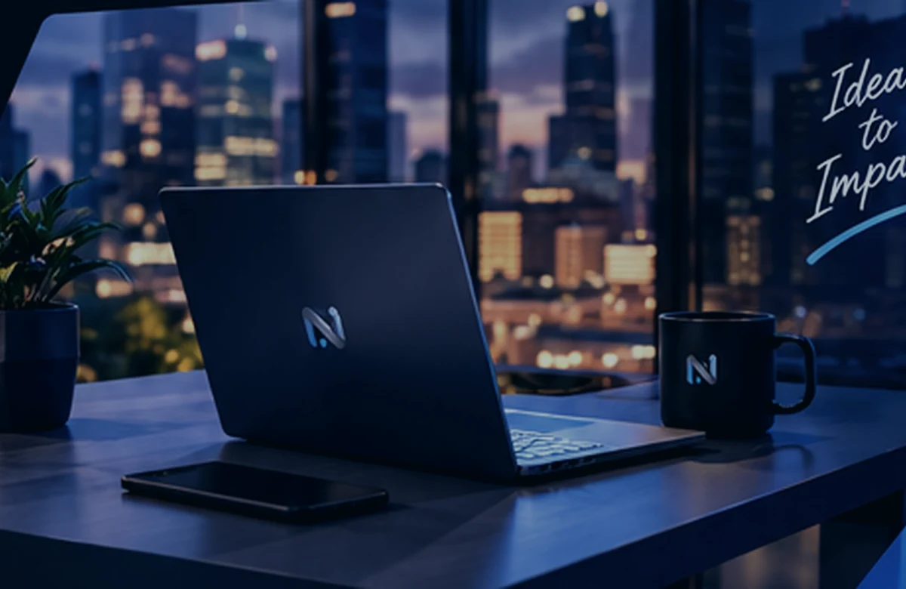

Programinės įrangos kūrimas
Individualios interneto sistemos ir programos, pritaikytos jūsų poreikiams.
Sužinoti daugiau
Kuriame modernias interneto svetaines, išmanias sistemas ir patogias skaitmenines patirtis. Nuo pirmos idėjos iki galutinio rezultato.
Nuo idėjos iki veikiančio sprendimo. Parenkame technologijas pagal jūsų tikslus, o ne atvirkščiai.
Individualios interneto sistemos ir programos, pritaikytos jūsų poreikiams.
Sužinoti daugiauAiškus, modernus ir patogus dizainas, kuris patinka jūsų klientams.
Sužinoti daugiauPatikima infrastruktūra, lengvas augimas ir saugus duomenų valdymas.
Sužinoti daugiauDuomenimis grįstos kampanijos, kurios padeda pasiekti tikslinę auditoriją.
Sužinoti daugiauTechnologijų strategija ir praktiniai atsakymai į sudėtingus klausimus.
Sužinoti daugiauNuolatinis palaikymas, atnaujinimai ir pagalba, kai jos labiausiai reikia.
Sužinoti daugiau
„Nexus Digital“ – kūrybiškumo ir technologijų derinys. Tikime, kad geriausi sprendimai gimsta iš aiškaus supratimo, kokį rezultatą norite pasiekti.
Kiekvienam projektui skiriame dėmesį nuo pirmo pokalbio iki galutinio paleidimo. Siekiame, kad sudėtingos technologijos jūsų verslui taptų paprastos.
Suprantami etapai
Žmogui, ne tik ekranui
Sprendimai su ateitimi
Skaidrus procesas nuo pirmos konsultacijos iki kokybiško ir veikiančio projekto.
Išsiaiškiname tikslus, auditoriją ir jūsų poreikius.
Sudarome aiškų veiksmų planą ir parengiame dizainą.
Kuriame, tikriname ir tobuliname pasirinktą sprendimą.
Pristatome rezultatą ir padedame juo naudotis.
Papasakokite, ką norite sukurti. Kartu atrasime tinkamiausią kelią jūsų tikslui pasiekti.